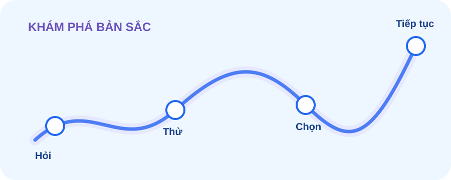

Khủng hoảng bản sắc cá nhân là gì?
Những lúc hoài nghi về những lựa chọn trong quá khứ, cảm thấy tương lai mờ mịt hoặc không chắc đâu là giá trị của riêng mình - Những lúc như thế, bộ não của chúng ta có thể hiểu về điều đó như thế nào?
PSYCHOLOGY • IDENTITY • STRESS
Một không gian về khủng hoảng bản sắc cá nhân — nơi những câu hỏi về giá trị, lựa chọn, vai trò và tương lai được nhìn dưới góc độ tâm lý học, cùng với cách chúng có thể liên quan đến căng thẳng tâm lý.
Nó còn có thể là giai đoạn mà những điều mình từng luôn khẳng định lại trở nên mơ màng: Tôi coi trọng điều gì, muốn trở thành ai, thuộc về đâu, và lựa chọn nào thật sự phù hợp với tôi - những câu hỏi đặt ra cho bản thân dần sâu sắc hơn.
Ở "Identity & Wellbeing", khủng hoảng bản sắc cá nhân được tiếp cận như một vấn đề để khám phá và nghiên cứu, không phải một nhãn chẩn đoán.
Điểm giao với căng thẳng tâm lý nằm ở việc khi cá nhân phải đưa ra lựa chọn thích nghi với sự thay đổi hoặc đối diện với kỳ vọng, mỗi cá nhân có thể cảm nhận những loại áp lực rất khác nhau.
Xem trang nghiên cứu →Giá trị, mục tiêu, vai trò và cảm nhận về “mình là ai”.
Những lựa chọn, trải nghiệm và câu hỏi giúp mình hiểu mình hơn.
Những lúc yêu cầu của hoàn cảnh được xem là vượt quá nguồn lực.
Chậm lại để quan sát, suy nghĩ về cảm xúc và lựa chọn của chính mình.

Những lúc hoài nghi về những lựa chọn trong quá khứ, cảm thấy tương lai mờ mịt hoặc không chắc đâu là giá trị của riêng mình - Những lúc như thế, bộ não của chúng ta có thể hiểu về điều đó như thế nào?
Khám phá, cam kết và bốn trạng thái thường được dùng để nghiên cứu quá trình hình thành bản sắc.
Không chỉ đối với một sự kiện riêng biệt, cách ta đánh giá tình huống và nguồn lực ứng phó cũng góp phần tạo nên trải nghiệm stress.
Ngành học, nghề nghiệp, các mối quan hệ và hình dung về tương lai có thể khiến câu hỏi bản sắc trở nên rất gần gũi.
Tập trung vào phần có thể thay đổi, xây dựng điểm tựa sinh hoạt và kết nối với người khác.
Quan sát mức độ, thời gian kéo dài và tác động đến học tập, công việc, quan hệ và sinh hoạt.
Không tìm thấy bài viết phù hợp.
Phần nghiên cứu trình bày ngắn gọn những gì đang được thực hiện, mẫu nghiên cứu, hướng phân tích và cách diễn giải kết quả.
Xem thông tin nghiên cứu →Booklet “Bản sắc, áp lực & hành trình hiểu mình” tóm lược các khái niệm, kết quả nghiên cứu, câu hỏi tự phản tư và nguồn học thuật/podcast được chọn lọc.
Không phải mọi giai đoạn mơ hồ đều là bế tắc. Đôi khi đó là lúc bạn đang có cơ hội để được "ve sầu thoát xác".
— Lời nhắn gửi ẩn danh